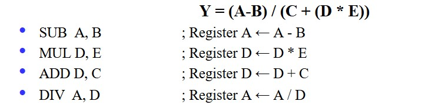

Chapter5 Instruction Set Architecture
5.1 Operands and Addressing Modes
n-Operand Instructions:
对于同一个赋值语句：
$$Y=(A-B)/(C+(D*E))$$
0操作数：使用栈：
1操作数：

2操作数：

3操作数：
Addressing:
-
立即数取址
例如：ADD #5
表示直接将数字 5 加到某个数上 -
直接取址
例如：ADD 100
表示将地址为 100 的内存中的数加到某个数上 -
间接取址
例如：ADD [100]
表示内存地址为 100 的地方存的是另一个地址，再根据这个地址找到对应的数加到某个数上 -
寄存器直接取址
例如：ADD R5
表示将 5 号寄存器中的值加到某个数上 -
寄存器相对取址
例如：ADD [R3]
表示存在 3 号寄存器中的值是一个地址，再根据这个地址找到对应的数加到某个数上

5.2 Evolution and Classification
CISC（复杂指令系统计算机）:
强化指令功能，减少指令条数。
代表：X86
RISC（精简指令系统计算机）:
减少指令种类，规范指令格式。
代表：ARM，MIPS
5.3 RISC-Ⅴ ISA
Processor State:
- 程序计数器（
pc） - 32个整数寄存器（
x0-x31） - 32个浮点数寄存器（
f0-f31） - 状态寄存器（
fcsr）
RISC-V Hybrid Instruction Encoding:
指令长度有16，32，48，64……最基础的指令长度为 32 位，固定，最低两位为 11，所有的分支和跳转保证最低为 16 位。
Four Core RISC-V Instruction Formats:

R-Type:
将寄存器rs1和rs2中的值进行某个操作，将操作结果存到寄存器rd。

I-Type:
将寄存器rs1和立即数进行某个操作，将操作结果存到寄存器rd。

U-Type:
LUI:在已有的常数上构建新的常数，并存到寄存器中
AUIPC:用于构建 PC 相对地址，将立即数重新构建后与 PC 相加，并存到寄存器中

I/S-Type:
ld:从rs1取出数据，与立即数相加得到地址，根据该地址取出内存的数据，存到rd中
sd:从rs1中取出数据，与立即数相加得到地址，将rs2的数据存到内存的对应地址
J-Type:
跳转指令
B-Type:
比较跳转指令
B 类型和 J 类型没有分支延迟槽。
Definition
分支延迟槽是一种处理器设计技术，主要用于解决由于条件分支指令引起的流水线停顿问题，当遇到一个条件语句时，CPU 不确定下一次执行的是下一条语句还是某个目标位置的语句，这就会导致一个时钟周期的延迟。
为了解决这个问题，就有了分支延迟槽技术，这种技术默认执行下一条语句，当条件分支语句的下一条语句计算出来的时候，再决定走哪条语句。
但是 RISCⅤ 架构已经放弃了分支延迟槽。
Privileged ISA（特权指令集架构）:
指那些只能在特定的操作模式（如内核模式或超级用户模式）下执行的指令。
RISCⅤ 提供了三个等级的特权，称为 modes。
其中，machine mode 的等级最高，是唯一必选模式 required mode。
处理器大部分的执行时间都花在最低特权模式下，但中断和异常会将控制权转移到更高特权的模式。
5.4 RISC-Ⅴ Assembly Language
t0,t1,t2：临时寄存器
sp：stack pointer 栈指针，指向内存地址的起点
Converting C Code to RISC-Ⅴ:

寄存器的大小比内存小很多，但寄存器的读写速度比内存快很多。
内存是以字节为单位寻址的，但lw和sw指令一次访问一个 word（4B）。
内存可以存储那些不能存在寄存器中的变量，但速度很慢，因此尽量减少使用 load 和 store。
控制流汇编:

函数调用汇编:
内存模型：
- Code/Text
- Static/Data
- Heap
- Stack
RISC-Ⅴ 的指令存在 Text 中，为 32 位，因此，下一条指令要往后 4 个 Byte。
PC 寄存器放置当前执行的指令的地址。
对于 J 型跳转指令，会跳转至对应的 Label，但会在寄存器 rd 中保存 PC+4。
对于栈的地址从上往下依次减小，栈是向下生长的。
函数调用会自动创建一个栈，如果函数里调用函数则会继续往下建栈。
sp寄存器叫做 stack pointer，一直指向栈底，栈的创建就是依靠移动sp来实现的。
在sp上面的是另一套函数，由于sp指的是当前的函数开头而不是另一套函数，因此未经允许不得修改它。
通过减小sp，即让它往下走，即指向更小的地址，可以分配更多的空间给函数。
在函数调用结束后，sp应设置回调用的地方。
对于函数调用：
a0：存放输入的变量 i，之后还有再次利用，存放返回的值ra：存放返回的地址sp：栈指针t0：存放临时的值s0，s1：存放不变的值
一般情况下的约定俗成：
jal Label实际表示的是jal ra Label
ret实际表示的是jr ra
zero表示的是x0寄存器，存储的是 0
ra表示的是x1寄存器，存储的是返回地址
Callee Saved Registers：
指再函数调用过程中，被调用者需要保证在返回调用者之前保存并恢复这些寄存器的值。
sp：x2寄存器s0~s11
Caller Saved Registers：
指在函数调用过程中，如果调用者希望在函数调用后恢复这些寄存器的值，那么调用者需要负责保存这些寄存器的值。
raa0~a7，用于函数变量，其中a0和a1可用于函数输出t0~t6：临时寄存器